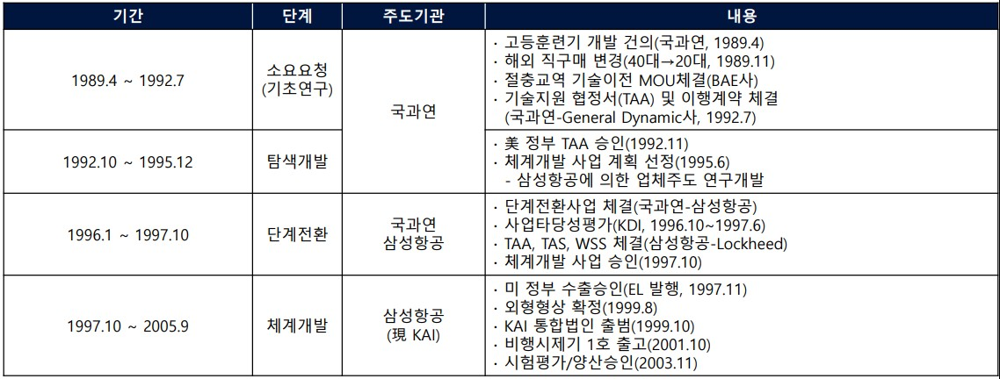
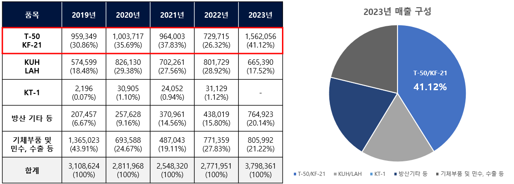
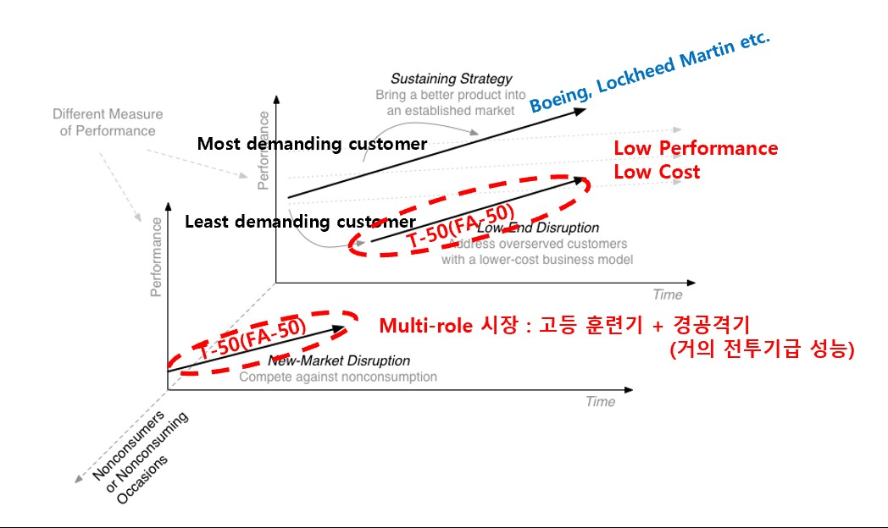
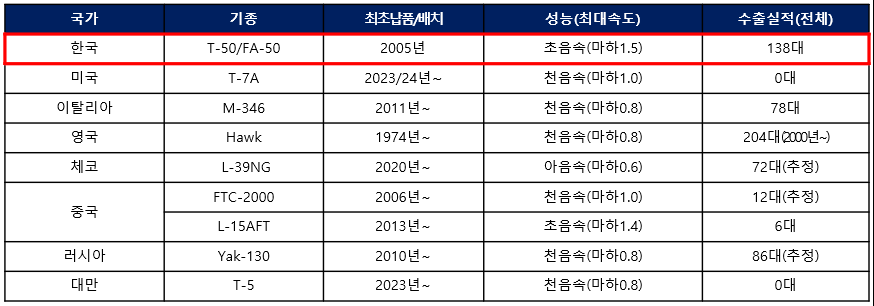

항공산업은 전투기 한 대에 약 20만 개의 부품이 들어가는, 모든 산업을 통틀어 가장 복잡하고 시스템 통합이 어려운 분야다. 후발주자가 기술 추격뿐만 아니라 시장에서도 성공하기 힘든 분야로 인식되어 왔지만, 한국항공우주산업(KAI)은 F-16 면허생산 경험만으로 세계 여덟 번째 초음속기 개발에 성공했다. 본 사례연구는 T-50 사례 분석을 통해 KAI가 기술개발과 시장에서 성공한 요인을 도출한다.
- 항공산업은 자주 국방과 경제발전에 직결되는 국가전략기술이자 여러 산업 중 가장 복잡하고 시스템 통합이 어려운 복합제품시스템 산업으로, 경험 축적이 중요해 후발주자가 기술 추격과 시장 성공 모두 이루기 힘든 분야로 인식된다.
- 그럼에도 한국항공우주산업(KAI)은 초음속기 기술 개발과 시장 진입에 성공했으며, 본 연구는 T-50 사례 분석을 통해 KAI가 기술개발과 시장에서 성공한 요인을 도출했다.
- 기술개발에 성공할 수 있었던 요인은 암묵지의 형식지화와 통합적 조직 구성으로 나타났다.
- 시장에서 성공할 수 있었던 요인은 시장 지향적 개발과 거점시장 공략, 그리고 파괴적 혁신으로 나타났다.
- 항공산업에 신규 진출하는 후발기업의 기술 추격과 시장 진입에는 정부의 정책, 기업의 기술적 능력도 중요하지만 지식경영·인사조직 전략·시장 및 마케팅 전략 등 기업의 경영전략도 매우 중요하다는 점을 시사한다.
1. 서론
기술이 복잡하고 높은 수준의 시스템 통합(system integration)이 필요한 산업일수록 후발주자가 새롭게 진입하여 기술을 추격하기 어렵다. 자동차가 3만 개의 부품으로 이루어져 있는 반면, 전투기는 약 20만 개의 부품으로 이루어져 있다. 선발주자들은 추격 위험을 최소화하기 위해 그들이 가진 지식을 암묵적 지식으로 유지하고, 경험의 축적이 중요한 유산적 지식으로 보유하고자 한다.
그럼에도 우리나라는 KF-16 면허생산에서 시작해 T-50 고등훈련기, 수리온(KUH) 개발 및 수출 성공까지 30년이라는 짧은 기간에 모두 성공한 유일한 국가가 됐다. 특히 KAI가 세계 8번째로 개발에 성공한 T-50은 일반적인 항공기 개발 단계인 '면허생산–기본훈련기–고등훈련기–초음속기'를 따르지 않고 면허생산에서 곧바로 초음속기 개발에 성공한, 세계적으로 전무후무한 사례다.
2. 이론적 배경
2.1 항공산업 특성 — 가장 복잡한 복합제품시스템
항공산업은 안보 및 산업발전 측면에서 국가 전략산업이자, 첨단소재·전자·기계·통신·IT가 융합된 기술 집약산업이며, "전투기 1대 수출이 국산 중형차 1,000대를 수출하는 효과가 있다"고 할 정도의 고부가가치 산업이다. 개발기간 측면에서도 자동차 평균 1.5년, 조선 평균 5년과 달리 항공산업은 평균 10년이 소요되는 장주기 산업이다.
2.2 국가전략기술과 기술주권
미·중 기술패권 경쟁 속에 항공산업은 무인 비행체의 전장 적용 확대, 도심항공교통(UAM) 상용화에 따라 우리나라 12대 국가전략기술로 선정되었다. 국가전략기술은 국가 수준에서 국가안보 또는 경제적 번영을 위해 필수적인 전략기술로 정의된다.
2.4 암묵지와 형식지
항공산업은 개별 부품에 대한 지식은 문서로 일반화될 수 있으나, 이를 하나의 시스템으로 통합하는 지식은 추상성을 가지며 과거로부터 축적해온 경험이 중요하게 작용한다. 그렇기 때문에 항공산업은 유산적 지식(heritage knowledge)이 중요한, 암묵지에 해당되는 산업이다. 연구는 Nonaka(1994)의 SECI 모델(사회화–표출화–연결화–내면화)을 분석 틀로 삼는다.
2.5 파괴적 혁신
파괴적 혁신은 "덜 까다로운 고객들을 대상으로 간단하고 편리하며 저렴한 제품을 공급함으로써 기존의 시장 질서를 파괴하고 새로운 시장을 창출하는 혁신"(Christensen, 2013)이다. 기존 기업들은 자원·프로세스·가치(RPV)를 빠르게 변화시키기 어렵기 때문에 파괴적 혁신이 오고 있다는 것을 알더라도 대비하기 힘들다.
3. 연구 가설
항공산업은 자주국방과 경제발전에 직결되는 국가전략기술인 동시에, 전투기 한 대가 약 20만 개의 부품으로 이뤄질 만큼 시스템 통합이 어려운 복합제품시스템(CoPS) 산업이다. 이러한 복잡성 탓에 지식이 암묵적 성격을 띠어 과거로부터의 경험 축적이 결정적으로 작용한다. 이 문제의식에서 본 연구는 세 가지 연구질문을 설정했다. 첫째, 전투기 개발 후발주자인 한국항공우주산업(KAI)이 기술 추격에 성공한 요인은 무엇인가. 둘째, 후발주자였던 KAI가 시장에서 성공한 요인은 무엇인가. 셋째, 이로부터 항공산업을 육성하려는 후발주자에게 주는 시사점은 무엇인가.
이에 답하기 위해 T-50(FA-50) 사례를 기술을 개발하던 기술개발기와 개발 완료 후 시장에 판매되기 시작한 시장진입기로 구분해 분석하고, 개발 성공과 시장 진입으로 얻은 기술적·경영적 성과를 검토한 뒤 이를 종합해 추격 성공요인을 도출하는 흐름으로 연구를 진행했다.
4. 사례 분석: T-50 개발 15년의 여정
T-50 개발 사업은 공군의 노후화된 훈련기(T-33, TF-5B)를 대체하기 위해 시작된, 우리나라 최초의 초음속 항공기 개발 사업이다. 1997년 10월부터 2005년 9월까지 사업예산 1조 7,996억 원이 투입된 대규모 국가 프로젝트로, 정부가 70%, KAI가 17%, 미 록히드마틴이 13%를 부담하는 국제공동개발로 진행되었다.

4.2.2 기술개발기 — 절충교역에서 체계개발까지
선행연구 단계에서는 초음속 항공기를 개발할 기술이 없어, 공군이 구매하는 고등훈련기(영국 BAE사)의 절충교역을 통해 개발 기술을 이전받았다. 탐색개발 단계에서는 "세계 최초로 고등훈련기를 초음속으로 개발하는 것"으로 요구도를 설정했고, 체계개발을 국가 연구기관이 아닌 업체가 직접 주도하도록 결정했다. 업체에 체계개발을 맡기면 회사의 생사가 달려 있어 성공 가능성이 높다는 판단이었다.
체계개발 단계에서 모든 설계는 100% 컴퓨터 설계 프로그램(CATIA)을 활용했는데, 이는 당시 전세계적으로도 찾아보기 힘든 이례적인 설계 방식이었다. 시뮬레이션을 반복 수행해 한 치의 오차도 없이 조립이 가능했고, 2002년 8월 시제 1호기 초도비행, 2003년 2월 최초 초음속 돌파에 성공했다.
4.2.3 시장진입기 — 하나의 플랫폼, 다양한 파생형
개발 성공 이후 T-50이라는 기본 플랫폼은 전술입문기(TA-50), 공중곡예기(T-50B), 경공격기(FA-50)로 개조 개발되었고, 수출국 요구에 맞춰 인도네시아(T-50i), 필리핀(FA-50PH)을 거쳐 최근 폴란드와 3조 4천억 원 규모의 FA-50PL 대규모 수출 계약까지 이어졌다.
4.3 기술적·경영적 성과
KAI는 T-50 개발로 체계종합, 항공기 조립, 설계/해석, 시험평가에서 선진국과 거의 유사한 기술 능력(기술수준 5.0 근접)을 확보했고, 우리나라는 자체 개발 초음속 항공기를 보유한 전세계 12개국에 진입했다. 체계개발 기간 특허 출원 수는 380건으로 급증했다. T-50 개발에 성공하고 시장에 진출한 2006년부터 매출액이 지속 상승했으며, 최근 5개년 매출에서 T-50 계열이 평균 30%의 비중을 차지하는 안정적인 캐시카우로 자리 잡았다.

5. 연구 결과: 네 가지 성공요인
5.1 암묵지의 형식지화
KAI는 록히드마틴에서 파견된 개발 경험이 많은 기술지원 인력(T/A)과의 1대1 기술교습으로 축적된 경험을 암묵지로 받아들였고(사회화), 공식 도면·기술자료뿐 아니라 개인적으로 확보한 지식까지 문서화해 암묵지를 형식지화했다(표출화). 문서화한 형식지들을 조직 내 정보공유시스템에 저장해 더 체계적인 형식지로 창출했으며(연결화), 엔지니어들이 연구팀 단위의 스터디 그룹을 결성해 토의하는 과정을 거쳐 지식을 다시 내면화했다. 이렇게 축적된 지식은 이후 수리온(KUH-1), 소형무장헬기(LAH), 한국형전투기(KF-21) 개발에도 적극 활용되었다.
5.2 통합적 조직 구성
항공기는 엔진에 대한 미세한 설계 변경도 연료·동력전달·기체구조·전기 배선, 심지어 조종석 계기판까지 전 계통에 영향을 주는 'Integral Architecture' 제품이다. KAI는 이 복잡성을 통제하기 위해 사업관리·엔지니어링·마케팅·구매·생산품질·경영지원 부서를 모두 'KTX-2(T-50) 개발센터'라는 하나의 통합적 조직에 배치해, 개발 현안 발생 시 유기적 소통과 전사적 대응이 가능하도록 했다.
5.3 시장지향적 개발 / 거점시장 공략
KAI는 개발 계획 수립 단계에서부터 시장 지향적인 개발 계획을 수립했다. 선진업체들이 치열하게 경쟁하는 전투기 시장 대신 경쟁이 덜 치열한 고등훈련기 겸 경공격기 시장을 목표로 상호 보완적 포지셔닝을 취해 록히드마틴의 투자(13%)와 적극적인 기술지원, 글로벌 마케팅 역량까지 이끌어냈다. 미 공군 차세대 고등훈련기 400대를 포함해 약 1,000대의 시장이 열릴 것으로 예상하고 설계 단계부터 경공격기로 개조 가능하도록 설계 개념을 수립했으며, 실제 판매 양상도 이 전망과 유사하게 전개되고 있다.
5.4 파괴적 혁신
보잉·록히드마틴 등 기존 기업들은 수익 창출이 작은 고등훈련기 겸 경공격기 시장을 간과하고 최신식 전투기로 가장 까다로운 고객들(most demanding customers)을 만족시키는 존속적 전략을 펼쳤다. 반면 KAI는 덜 까다로운 고객들을 대상으로 저성능·저비용의 적정한 제품 T-50(FA-50)을 공급함으로써 Low-end disruption을 이끌어냈다.

당시 초음속기이면서 고등훈련기와 경공격기 역할을 모두 수행하는 항공기는 존재하지 않았다. F-22, F-35 등 차세대 전투기의 소프트웨어 복잡성이 급증하며 기존 아음속 훈련기(M-346, Hawk-128)로는 적합한 교육을 제공하기 어려워진 시점에, 마하 1.5의 T-50은 조종사 전환 교육 시간을 획기적으로 단축시켰다. New market disruption까지 이뤄낸 것이다.

6. 결론 및 시사점
- 기술 추격의 성공요인: 개발 초기부터 모든 연구개발 계획, 기술 지식, 기능별 책임과 역할을 명확히 하는 문서화 역량(암묵지의 형식지화)과, 복잡성(integral architecture)을 통제하는 통합적 조직 구성이 초음속기 기술 개발 성공을 이끌었다.
- 시장 성공요인: 연구개발기획 단계부터의 시장 지향적 설계 개념, 상호 보완적 제품 포지셔닝을 통한 선진업체 투자 유도, 그리고 선진 업체들이 간과한 시장에 적정한 제품을 제공한 파괴적 혁신이 주효했다.
- 후발주자에 주는 시사점: 전투기처럼 약 5조~10조 원의 투자와 10년 이상의 개발이 필요한 공공성 높은 산업에서는 정부의 적극적인 기술 수요 정책을 통한 국내 연구개발 기회 창출이 필수적이다. 그러나 정부 정책이 뒷받침되어도 이를 흡수하는 기업의 역량과 전략이 준비되어 있지 않으면 성공하기 어렵다 — 지식경영, 인사조직 전략, 시장 및 마케팅 전략이 함께 작동해야 한다.